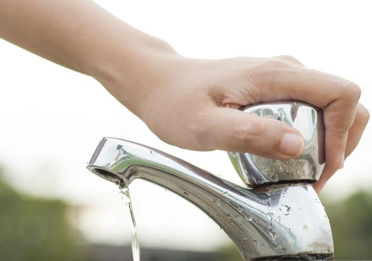
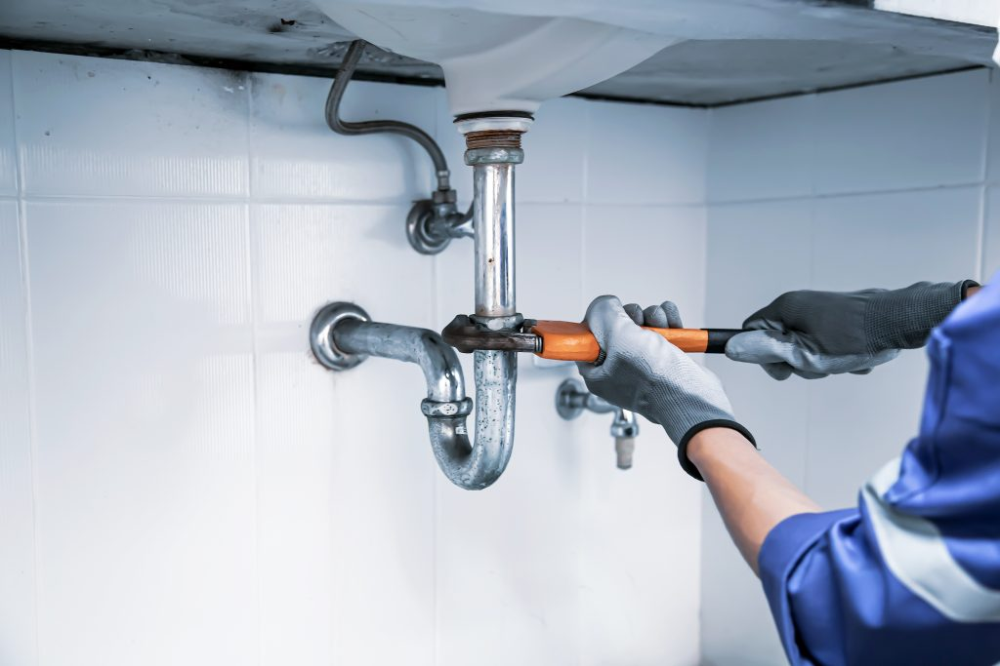
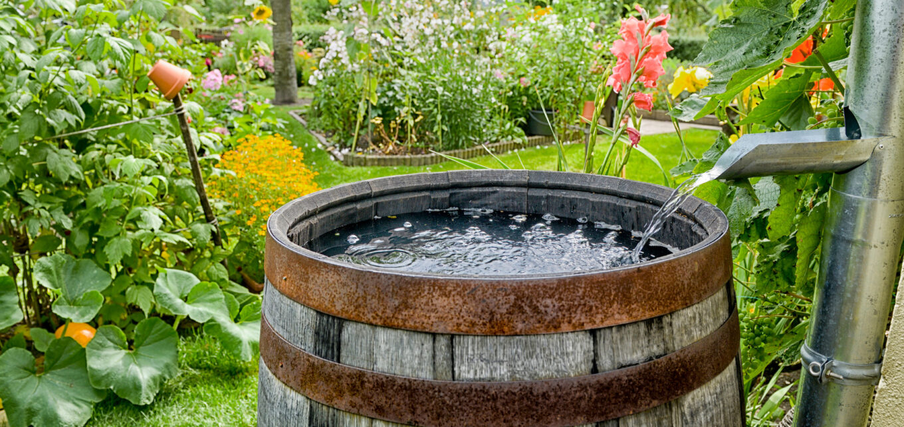
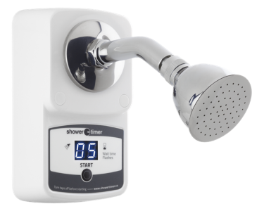
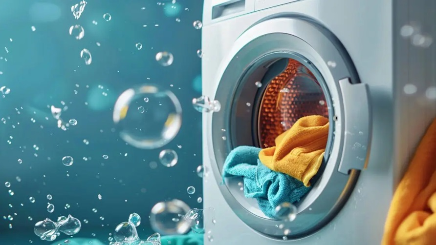
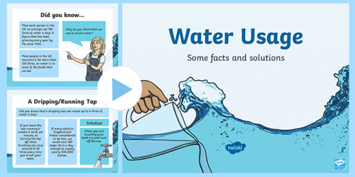

Turn Off the Tap
While brushing teeth or washing up, turn off the tap. Saves up to 6 litres per minute — a simple habit with measurable results.
⚡ 2 ptsChoose the water-related actions you already take (or plan to take). See how your choices add up and discover your real-world impact on SDG Goal 6.
Step 1 — Pick your actions
Click on any card to select or deselect it. Your impact score updates live.

While brushing teeth or washing up, turn off the tap. Saves up to 6 litres per minute — a simple habit with measurable results.
⚡ 2 pts
A single dripping tap wastes over 5,000 litres a year. Reporting or fixing leaks protects clean water resources and reduces household bills.
⚡ 3 pts
Use a rain barrel or container to collect rainwater for watering plants or cleaning. Reduces demand on treated water supplies.
⚡ 4 pts
Cutting your shower by just 2 minutes saves around 20 litres. Installing a shower timer is a small step with big community-wide results.
⚡ 3 pts
Run dishwashers and washing machines only when full. Choose appliances with a high water efficiency rating to save hundreds of litres monthly.
⚡ 4 pts
Share water-saving tips with friends, family, or on campus. Collective awareness drives community change and supports SDG 6 globally.
⚡ 4 ptsStep 2 — Your impact score